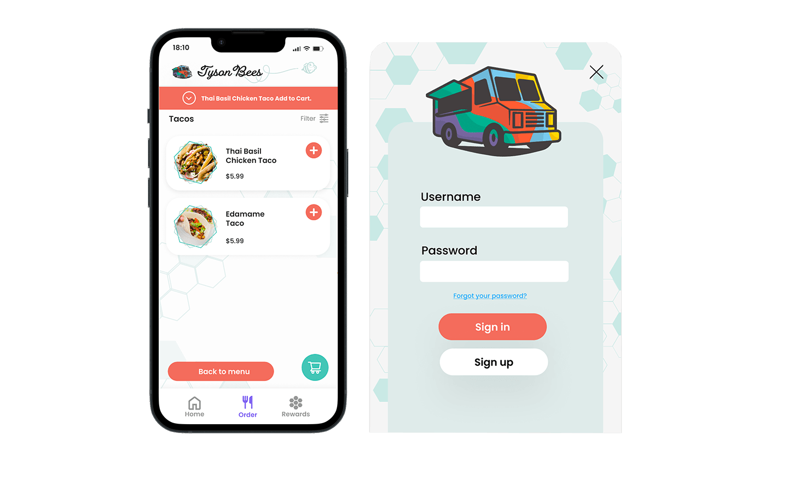

Tyson Bees Food Truck App Design
Sabl Media Folder-Microsoft Teams


IDM 216 User Experience focuses on taking prototypes from IDM 215 User Design. This is a team-based project, and It is a 10 weeks design project beginning in January 2023. My role on the project is data architect. Our team is called Sabl Media, and we chose the Tyson bees food truck as our design project from IDM 215 User Design. Tyson Bees is a food truck located at 33rd St & Spruce St and open 11:00 AM - 5:30 PM from Monday through Friday.
I am the data architect for Tyson Bee's Web Design Project. My role in the project is to collect and organize the data obtained and maintain databases since the project's outset in January 2023.
My job is to help manage the information the projects need. It includes collecting Figma assets, creating and organizing files, communicating with team members for file support, and taking notes and google forms during Alpha and Beta interviews.
As a data architect, My goal at the team is to help all team members find project information quickly and easily. Also, I help the team formulates the organizational data strategy, including data quality, the flow of data within the organization, and security of data such as figma file, assets, coding, and general data from the group.
My role as a data architect at the project started with setting up an organized folder structure such as the wiki section, and team member contact information.
Create folders by define each categories
In the meantime, I also help with Figma File to work on a non-critical path such as checkout page pop up section and sign in page and Takes notes on Usability testing and create a google survey form.
Our team designed and developed the Tyson Bees food truck app by using Figma and GitHub coding. There are three main stages during the 10 weeks project. We started from the Low Fidelity Code Prototypes-CodePen, Mid Fidelity Prototyoes-Alpha to the High Fidelity Web site-Beta. We had over 10 user interviews from the Alpha test to the Beta test. Our goal is to make sure the design is perfected for them to use it. All our processes start from Figma and then transfer to coding.
Tyson Bees food truck app had been developed by another team on IDM 215 User Design in the fall of 2022. One of the ways to push the design further from our team is through a usability test with two main stages such as alpha and beta. During the alpha usability test, we got feedback about the checkout page. One of the feedback that our team got from the usability test was when customers add items to the bag, there is no confirmation shown on the page.
Another feedback that we had from the alpha usability test was the sign-in page. According to the user, when they use the sign-in page, there is no option to select forget a password.

Therefore, the solution after the usability test from our team is to create a pop-up window for the checkout page when customers add an item, the top of the checkout page will show the add-on item for reference. Also, we added a forget a password option on the sign-in page. In that case, users are able to have the option to reset passwords or the option to get hints for sign-in.
Our team keeps pushing the design further because our goal is to create the sites to be perfected and for users are using them comfortably. We create more designs and make every site visit engaging and interactive. There are a couple of things that I learn from this team and my teammate, for example, collaborative, supportive, and time management skills. I am not a UXID major, but my teammates are helping me a lot with design skills.Our team did this successfully by keep connecting it to others and finishing our tasks on time. We Commitment to ensuring the team succeeds with all tasks, duties, and projects.